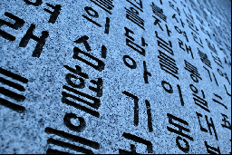

Zlevněné vstupné je určené pouze pro děti a studenty do 26 let, důchodce nad 60 let a partnery Centra Omega.
Štítky
Cizí jazyky
Cestování
Kurz
Praktické dovednosti
Popis akce

Centrum Omega uvádí další kurz v našem dlouhodobém partnerství s jazykovou školou Apostrof. Tentorkát na opravdu zajímavém projektu, a to jazykovém kurzu zaměřeném na korejštinu.
Korejština může působit na první pohled pro středoevropana, jako poměrně exotický jazyk. Zkušení instruktoři se Vás pokusí touto exotiku trochu provést.
Kurz vás seznámí nejen pouze s písmem a jyzakem, ale zasvětí Vás i do korejských reálií a seznámí Vás i s korejským způsobem života.
Uvedná cena za kurz je neměná. Zaplacením celé částky Vás opravňuje ke vstupu na všechny vypsané termíny akce.
Kapacita jazykové učebny je omezen, s nákupem tedy neváhejte. Lidé bez platné vstupenky nebudou na akci vpuštěni.